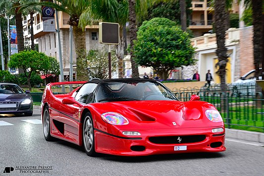

Ontstaansgeschiedenis
Aanleiding
In het najaar van 1989 – op het moment dat de productie van de Ferrari F40 nog in volle gang was – gaf Piero Ferrari de aanzet tot het nadenken over een nieuwe supersportauto.[a] Gezien het succes waarmee de F40 de veertigste verjaardag van de sportwagenfabrikant had gemarkeerd, was het voor hem duidelijk dat er een opvolger moest komen om het vijftigjarige jubileum van Ferrari S.p.A. luister bij te zetten. Ook kon Ferrari een positieve impuls gebruiken na het overlijden van oprichter Enzo Ferrari op 90-jarige leeftijd een jaar eerder.
